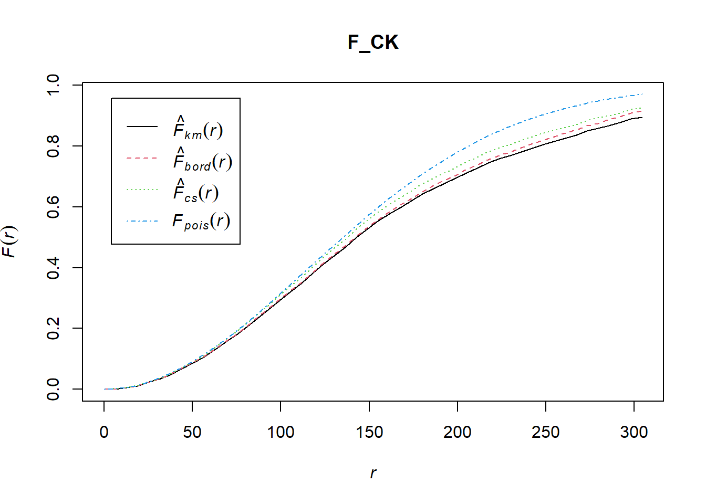
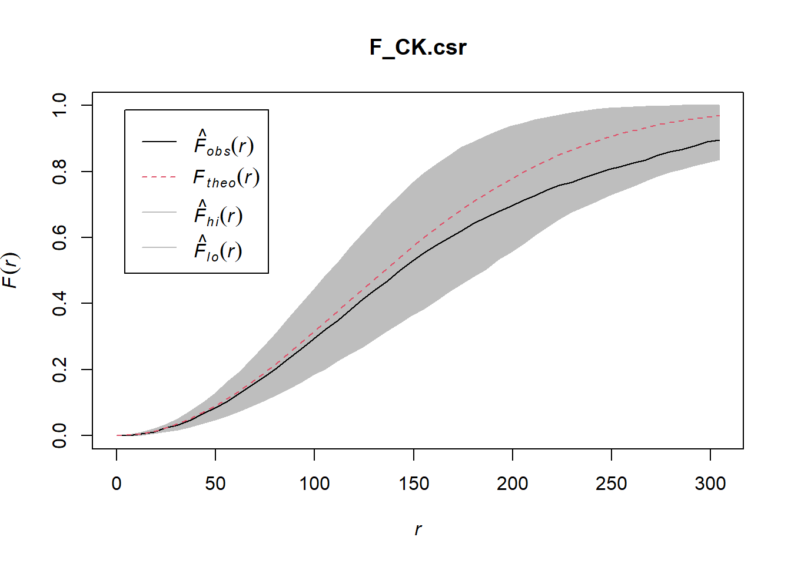
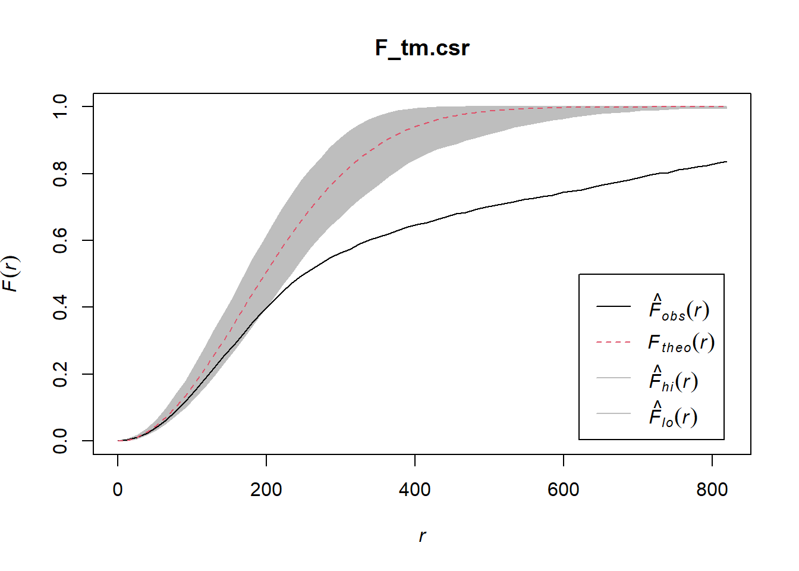
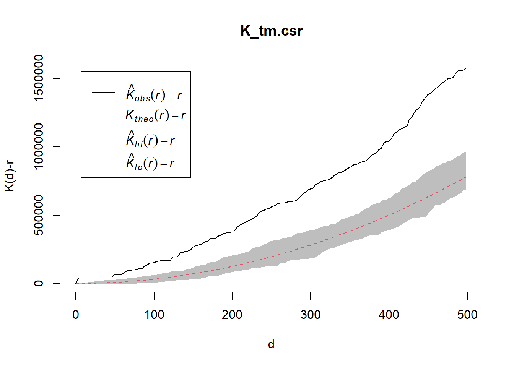
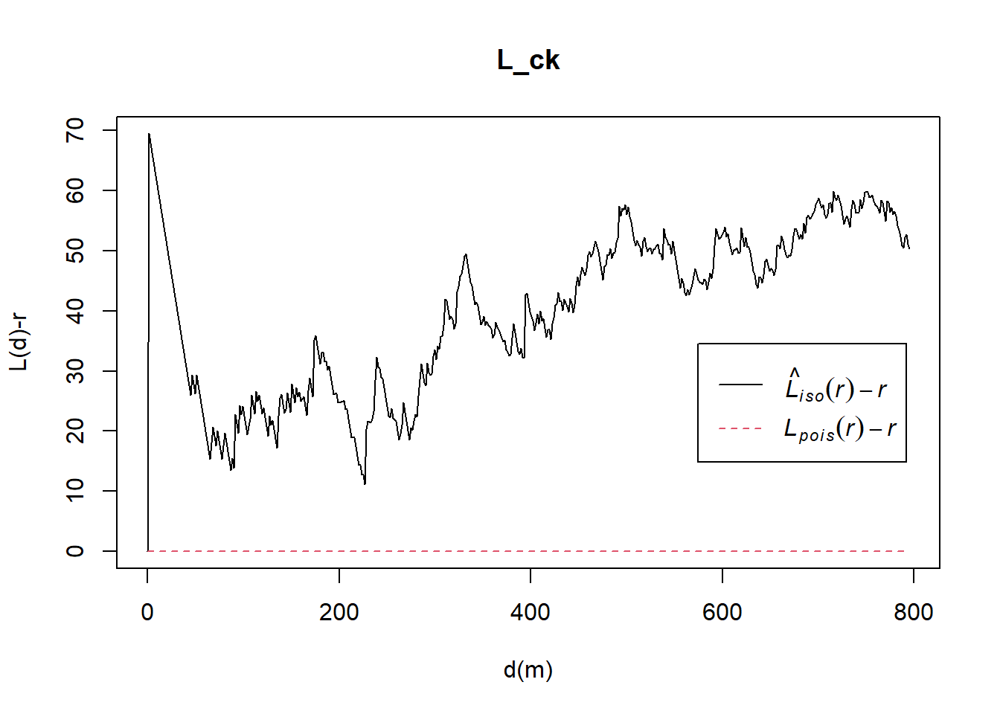
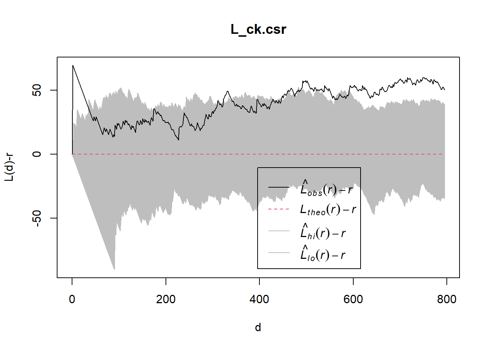
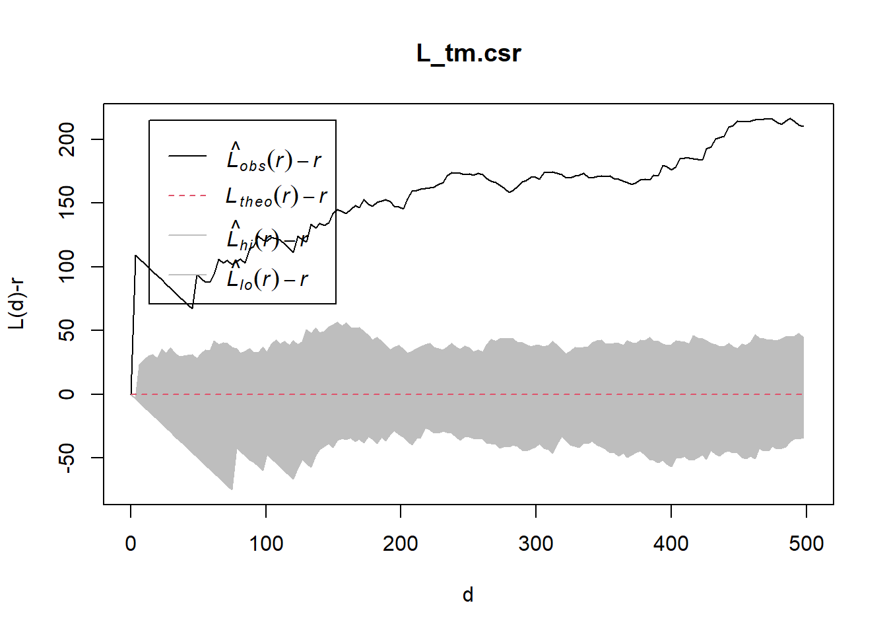

pacman::p_load(sf, spatstat, tmap, tidyverse)Spatial Point Patterns Analysis Methods (Continued)
Second-order spatial point pattern analysis examines the spatial relationships between points in a pattern, specifically focusing on how the presence of one point influences the location of others. It goes beyond simply describing the overall density of points (first-order effects) by investigating clustering, dispersion, or randomness at various spatial scales.
Using appropriate functions of spatstat, this hands-on exercise aims to discover the spatial point processes of childcare centres in Singapore to address the following questions:
Are the childcare centres in Singapore randomly distributed throughout the country?
If no, where are the locations with higher concentration of childcare centres?
The Data
Child Care Services data from data.gov.sg, a point feature data providing both location and attribute information of childcare centres. Master Plan 2019 Subzone Boundary (No Sea), a polygon feature data providing information of URA 2019 Master Plan Planning Subzone boundary data.
Both data sets are available at Singapore’s open data portal. They are provided in kml and geojson format. Students are free to download their preferred data format.
Install & Load Packages
4 R packages will be used.
sf: a relatively new R package specially designed to import, manage and process vector-based geospatial data in R.
spatstat: it has a wide range of useful functions for point pattern analysis. It will be used to perform 1st- and 2nd-order spatial point patterns analysis and derive kernel density estimation (KDE) layer.
tmap: provides functions for plotting cartographic quality static point patterns maps or interactive maps by using leaflet API.
tidyverse: a family of R packages designed for modern data science.
These packages are developed to work together seamlessly, sharing a common design philosophy, grammar, and data structures, which aims to make data manipulation, analysis, and visualization in R more intuitive and efficient.
Data Import and Preparation
The processes of importing and preparing the geospatial data to meet the analysis are similar to Hands-on Ex2a.
mpsz = st_read("data/geospatial/MasterPlan2019SubzoneBoundaryNoSeaGEOJSON.geojson")Reading layer `URA_MP19_SUBZONE_NO_SEA_PL' from data source
`C:\Users\chert\Desktop\cherteosg\ISSS626-GSA\Hands-on_Ex2b\data\geospatial\MasterPlan2019SubzoneBoundaryNoSeaGEOJSON.geojson'
using driver `GeoJSON'
Simple feature collection with 332 features and 13 fields
Geometry type: MULTIPOLYGON
Dimension: XY
Bounding box: xmin: 103.6057 ymin: 1.158699 xmax: 104.0885 ymax: 1.470775
Geodetic CRS: WGS 84childcare = st_read("data/geospatial/ChildCareServices.geojson")Reading layer `CHILDCARE' from data source
`C:\Users\chert\Desktop\cherteosg\ISSS626-GSA\Hands-on_Ex2b\data\geospatial\ChildCareServices.geojson'
using driver `GeoJSON'
Simple feature collection with 1925 features and 16 fields
Geometry type: POINT
Dimension: XY
Bounding box: xmin: 103.6878 ymin: 1.247759 xmax: 103.9897 ymax: 1.462134
Geodetic CRS: WGS 84Clean & Transform Data
Remove unnecessary dimensions [Z (elevation) and M (measure)] and transform to to ESPG 3414 (distance).
mpsz_sf <- mpsz %>%
st_zm(drop = TRUE, what = "ZM") %>%
st_transform(crs = 3414)childcare_sf <- childcare %>%
st_zm(drop = TRUE, what = "ZM") %>%
st_transform(crs = 3414)Filter to mpsz_cl
Remove non-residential areas:
mpsz_cl <- mpsz_sf %>%
filter(SUBZONE_N != "SOUTHERN GROUP",
PLN_AREA_N != "WESTERN ISLANDS",
PLN_AREA_N != "NORTH-EASTERN ISLANDS")Convert childcare to ppp
This is needed as spatstat needs its own specific format (planar point pattern).
childcare_ppp <- as.ppp(childcare_sf)Extraction
Focus on four specific areas:
pg <- mpsz_cl %>% filter(PLN_AREA_N == "PUNGGOL")
tm <- mpsz_cl %>% filter(PLN_AREA_N == "TAMPINES")
ck <- mpsz_cl %>% filter(PLN_AREA_N == "CHOA CHU KANG")
jw <- mpsz_cl %>% filter(PLN_AREA_N == "JURONG WEST")Create owin objects
This is needed as spatstat requires boundaries in its own format (observation window).
pg_owin = as.owin(pg)
tm_owin = as.owin(tm)
ck_owin = as.owin(ck)
jw_owin = as.owin(jw)Creates childcare_ck_ppp
This takes filters the childcare points to those that fall instead the 4 above mentioned planning areas.
childcare_pg_ppp = childcare_ppp[pg_owin]
childcare_tm_ppp = childcare_ppp[tm_owin]
childcare_ck_ppp = childcare_ppp[ck_owin]
childcare_jw_ppp = childcare_ppp[jw_owin]Second-order Spatial Point Patterns Analysis
Analyse Spatial Point Process Using G-Function
The G function measures the distribution of the distances from an arbitrary event to its nearest event.
In this section, you will learn how to compute G-function estimation by using Gest() of spatstat package. You will also learn how to perform monta carlo simulation test using envelope() of spatstat package.
Choa Chu Kang planning area
Computing G-function estimation:
set.seed(1234)The code chunk below is used to compute G-function using Gest() of spatat package.
G_CK = Gest(childcare_ck_ppp, correction = "border")
plot(G_CK, xlim=c(0,500))
Performing Complete Spatial Randomness Test
A hypothesis test is conducted to confirm the observed spatial patterns above.
Ho = The distribution of childcare services at Choa Chu Kang are randomly distributed.
H1= The distribution of childcare services at Choa Chu Kang are not randomly distributed.
The null hypothesis will be rejected if p-value is smaller than alpha value of 0.001.
Monte Carlo test with G-function:
G_CK.csr <- envelope(childcare_ck_ppp, Gest, nsim = 999)Generating 999 simulated realisations of CSR ...
1, 2, 3, ......10.........20.........30.........40.........50.........60..
.......70.........80.........90.........100.........110.........120.........130
.........140.........150.........160.........170.........180.........190........
.200.........210.........220.........230.........240.........250.........260......
...270.........280.........290.........300.........310.........320.........330....
.....340.........350.........360.........370.........380.........390.........400..
.......410.........420.........430.........440.........450.........460.........470
.........480.........490.........500.........510.........520.........530........
.540.........550.........560.........570.........580.........590.........600......
...610.........620.........630.........640.........650.........660.........670....
.....680.........690.........700.........710.........720.........730.........740..
.......750.........760.........770.........780.........790.........800.........810
.........820.........830.........840.........850.........860.........870........
.880.........890.........900.........910.........920.........930.........940......
...950.........960.........970.........980.........990........
999.
Done.Note: Using 999 is a common convention in spatial statistics. When you add your 1 observed value to the 999 simulated values, you get a nice round total of 1000. This makes the p-value calculation clean:
p-value = (rank of observed value among all 1000) / 1000
Tampines Planning Area
Computing G-function estimation:
G_tm = Gest(childcare_tm_ppp, correction = "best")plot(G_tm)
Perform Complete Spatial Randomness Test
Conduct a hypothesis test to confirm the observed spatial patterns above.
Ho = The distribution of childcare services at Tampines are randomly distributed.
H1= The distribution of childcare services at Tampines are not randomly distributed.
The null hypothesis will be rejected is p-value is smaller than alpha value of 0.001.
Monte Carlo test with G-function:
G_tm.csr <- envelope(childcare_tm_ppp, Gest, correction = "all", nsim = 999)Generating 999 simulated realisations of CSR ...
1, 2, 3, ......10.........20.........30.........40.........50.........60..
.......70.........80.........90.........100.........110.........120.........130
.........140.........150.........160.........170.........180.........190........
.200.........210.........220.........230.........240.........250.........260......
...270.........280.........290.........300.........310.........320.........330....
.....340.........350.........360.........370.........380.........390.........400..
.......410.........420.........430.........440.........450.........460.........470
.........480.........490.........500.........510.........520.........530........
.540.........550.........560.........570.........580.........590.........600......
...610.........620.........630.........640.........650.........660.........670....
.....680.........690.........700.........710.........720.........730.........740..
.......750.........760.........770.........780.........790.........800.........810
.........820.........830.........840.........850.........860.........870........
.880.........890.........900.........910.........920.........930.........940......
...950.........960.........970.........980.........990........
999.
Done.plot(G_tm.csr)
Analysing Spatial Point Process Using F-Function
The F function estimates the empty space function F(r) or its hazard rate h(r) from a point pattern in a window of arbitrary shape.
In this section, you will learn how to compute F-function estimation by using Fest() of spatstat package. You will also learn how to perform monta carlo simulation test using envelope() of spatstat package.
Choa Chu Kang planning area
Computing F-function estimation using Fest() of spatat package:
F_CK = Fest(childcare_ck_ppp)plot(F_CK)
Perform Complete Spatial Randomness Test
To confirm the observed spatial patterns above, a hypothesis test will be conducted.
Ho = The distribution of childcare services at Choa Chu Kang are randomly distributed.
H1= The distribution of childcare services at Choa Chu Kang are not randomly distributed.
The null hypothesis will be rejected if p-value is smaller than alpha value of 0.001.
Monte Carlo test with F-function
F_CK.csr <- envelope(childcare_ck_ppp, Fest, nsim = 999)Generating 999 simulated realisations of CSR ...
1, 2, 3, ......10.........20.........30.........40.........50.........60..
.......70.........80.........90.........100.........110.........120.........130
.........140.........150.........160.........170.........180.........190........
.200.........210.........220.........230.........240.........250.........260......
...270.........280.........290.........300.........310.........320.........330....
.....340.........350.........360.........370.........380.........390.........400..
.......410.........420.........430.........440.........450.........460.........470
.........480.........490.........500.........510.........520.........530........
.540.........550.........560.........570.........580.........590.........600......
...610.........620.........630.........640.........650.........660.........670....
.....680.........690.........700.........710.........720.........730.........740..
.......750.........760.........770.........780.........790.........800.........810
.........820.........830.........840.........850.........860.........870........
.880.........890.........900.........910.........920.........930.........940......
...950.........960.........970.........980.........990........
999.
Done.plot(F_CK.csr)
Tampines Planning Area
Computing F-function estimation Monte Carlo test with F-function:
F_tm = Fest(childcare_tm_ppp, correction = "best")
plot(F_tm)
Perform Complete Spatial Randomness Test
A hypothesis test will be conducted to confirm the observed spatial patterns above.
Ho = The distribution of childcare services at Tampines are randomly distributed.
H1= The distribution of childcare services at Tampines are not randomly distributed.
The null hypothesis will be rejected is p-value is smaller than alpha value of 0.001.
Perform the hypothesis testing:
F_tm.csr <- envelope(childcare_tm_ppp, Fest, correction = "all", nsim = 999)Generating 999 simulated realisations of CSR ...
1, 2, 3, ......10.........20.........30.........40.........50.........60..
.......70.........80.........90.........100.........110.........120.........130
.........140.........150.........160.........170.........180.........190........
.200.........210.........220.........230.........240.........250.........260......
...270.........280.........290.........300.........310.........320.........330....
.....340.........350.........360.........370.........380.........390.........400..
.......410.........420.........430.........440.........450.........460.........470
.........480.........490.........500.........510.........520.........530........
.540.........550.........560.........570.........580.........590.........600......
...610.........620.........630.........640.........650.........660.........670....
.....680.........690.........700.........710.........720.........730.........740..
.......750.........760.........770.........780.........790.........800.........810
.........820.........830.........840.........850.........860.........870........
.880.........890.........900.........910.........920.........930.........940......
...950.........960.........970.........980.........990........
999.
Done.plot(F_tm.csr)
Analysing Spatial Point Process Using K-Function
K-function measures the number of events found up to a given distance of any particular event. In this section, you will learn how to compute K-function estimates by using Kest() of spatstat package. You will also learn how to perform monta carlo simulation test using envelope() of spatstat package.
Choa Chu Kang Planning Area
Computing K-fucntion estimate:
K_ck = Kest(childcare_ck_ppp, correction = "Ripley")plot(K_ck, . -r ~ r, ylab= "K(d)-r", xlab = "d(m)")
Performing Complete Spatial Randomness Test
A hypothesis test will be conducted to confirm the observed spatial patterns above.
Ho = The distribution of childcare services at Choa Chu Kang are randomly distributed.
H1= The distribution of childcare services at Choa Chu Kang are not randomly distributed.
The null hypothesis will be rejected if p-value is smaller than alpha value of 0.001.
K_ck.csr <- envelope(childcare_ck_ppp, Kest, nsim = 99, rank = 1, glocal=TRUE)Generating 99 simulated realisations of CSR ...
1, 2, 3, 4, 5, 6, 7, 8, 9, 10, 11, 12, 13, 14, 15, 16, 17, 18, 19, 20,
21, 22, 23, 24, 25, 26, 27, 28, 29, 30, 31, 32, 33, 34, 35, 36, 37, 38, 39, 40,
41, 42, 43, 44, 45, 46, 47, 48, 49, 50, 51, 52, 53, 54, 55, 56, 57, 58, 59, 60,
61, 62, 63, 64, 65, 66, 67, 68, 69, 70, 71, 72, 73, 74, 75, 76, 77, 78, 79, 80,
81, 82, 83, 84, 85, 86, 87, 88, 89, 90, 91, 92, 93, 94, 95, 96, 97, 98,
99.
Done.plot(K_ck.csr, . - r ~ r, xlab="d", ylab="K(d)-r")
Tampines Planning Area
Compute K-function estimation:
K_tm = Kest(childcare_tm_ppp, correction = "Ripley")
plot(K_tm, . -r ~ r,
ylab= "K(d)-r",
xlab = "d(m)",
xlim=c(0,1000))
Note: “Ripley” here refers to Ripley’s K-function, and correction = “Ripley” specifically refers to Ripley’s isotropic edge correction method — named after the statistician Brian Ripley, who developed both the K-function itself and this particular way of correcting for edge effects.
Perform Complete Spatial Randomness Test
A hypothesis test will be conducted to confirm the observed spatial patterns above.
Ho = The distribution of childcare services at Tampines are randomly distributed.
H1= The distribution of childcare services at Tampines are not randomly distributed.
The null hypothesis will be rejected if p-value is smaller than alpha value of 0.001.
The code chunk below is used to perform the hypothesis testing.
K_tm.csr <- envelope(childcare_tm_ppp, Kest, nsim = 99, rank = 1, glocal=TRUE)Generating 99 simulated realisations of CSR ...
1, 2, 3, 4, 5, 6, 7, 8, 9, 10, 11, 12, 13, 14, 15, 16, 17, 18, 19, 20,
21, 22, 23, 24, 25, 26, 27, 28, 29, 30, 31, 32, 33, 34, 35, 36, 37, 38, 39, 40,
41, 42, 43, 44, 45, 46, 47, 48, 49, 50, 51, 52, 53, 54, 55, 56, 57, 58, 59, 60,
61, 62, 63, 64, 65, 66, 67, 68, 69, 70, 71, 72, 73, 74, 75, 76, 77, 78, 79, 80,
81, 82, 83, 84, 85, 86, 87, 88, 89, 90, 91, 92, 93, 94, 95, 96, 97, 98,
99.
Done.plot(K_tm.csr, . - r ~ r, xlab="d", ylab="K(d)-r", xlim=c(0,500))
Analysing Spatial Point Process Using L-Function
In this section, you will learn how to compute L-function estimation by using Lest() of spatstat package. You will also learn how to perform monta carlo simulation test using envelope() of spatstat package.
Choa Chu Kang planning area
Computing L Function estimation:
L_ck = Lest(childcare_ck_ppp, correction = "Ripley")plot(L_ck, . -r ~ r,
ylab= "L(d)-r", xlab = "d(m)")
Perform Complete Spatial Randomness Test
A hypothesis test will be conducted to confirm the observed spatial patterns above.
Ho = The distribution of childcare services at Choa Chu Kang are randomly distributed.
H1= The distribution of childcare services at Choa Chu Kang are not randomly distributed.
The null hypothesis will be rejected if p-value if smaller than alpha value of 0.001.
L_ck.csr <- envelope(childcare_ck_ppp, Lest, nsim = 99, rank = 1, glocal=TRUE)Generating 99 simulated realisations of CSR ...
1, 2, 3, 4, 5, 6, 7, 8, 9, 10, 11, 12, 13, 14, 15, 16, 17, 18, 19, 20,
21, 22, 23, 24, 25, 26, 27, 28, 29, 30, 31, 32, 33, 34, 35, 36, 37, 38, 39, 40,
41, 42, 43, 44, 45, 46, 47, 48, 49, 50, 51, 52, 53, 54, 55, 56, 57, 58, 59, 60,
61, 62, 63, 64, 65, 66, 67, 68, 69, 70, 71, 72, 73, 74, 75, 76, 77, 78, 79, 80,
81, 82, 83, 84, 85, 86, 87, 88, 89, 90, 91, 92, 93, 94, 95, 96, 97, 98,
99.
Done.plot(L_ck.csr, . - r ~ r, xlab="d", ylab="L(d)-r")
Tampines Planning Area
Compute L-function estimate:
L_tm = Lest(childcare_tm_ppp, correction = "Ripley")plot(L_tm, . -r ~ r,
ylab= "L(d)-r", xlab = "d(m)",
xlim=c(0,1000))
Perform Complete Spatial Randomness Test
A hypothesis test will be conducted to confirm the observed spatial patterns above.
Ho = The distribution of childcare services at Tampines are randomly distributed.
H1= The distribution of childcare services at Tampines are not randomly distributed.
The null hypothesis will be rejected if p-value is smaller than alpha value of 0.001.
L_tm.csr <- envelope(childcare_tm_ppp, Lest, nsim = 99, rank = 1, glocal=TRUE)Generating 99 simulated realisations of CSR ...
1, 2, 3, 4, 5, 6, 7, 8, 9, 10, 11, 12, 13, 14, 15, 16, 17, 18, 19, 20,
21, 22, 23, 24, 25, 26, 27, 28, 29, 30, 31, 32, 33, 34, 35, 36, 37, 38, 39, 40,
41, 42, 43, 44, 45, 46, 47, 48, 49, 50, 51, 52, 53, 54, 55, 56, 57, 58, 59, 60,
61, 62, 63, 64, 65, 66, 67, 68, 69, 70, 71, 72, 73, 74, 75, 76, 77, 78, 79, 80,
81, 82, 83, 84, 85, 86, 87, 88, 89, 90, 91, 92, 93, 94, 95, 96, 97, 98,
99.
Done.plot(L_tm.csr, . - r ~ r,
xlab="d", ylab="L(d)-r", xlim=c(0,500))